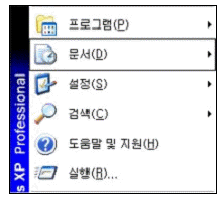
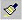
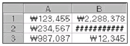
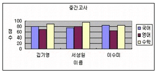
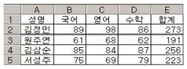
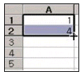
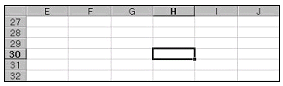
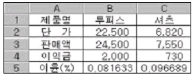
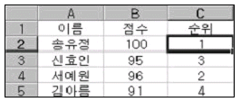

컴퓨터활용능력-3급(폐지) (2006-09-24 기출문제)
1과목: 컴퓨터 일반
1. 원격 로그인(Telnet), 파일전송(FTP), 메일(SMTP, POP)과 같은 서비스를 인터넷을 통해 사용하기 위해 TCP/IP를 구성하고자 한다. 다음 중 TCP/IP의 구성요소로 옳지 않은 것은?
- 게이트웨이
- IP주소
- 컴퓨터 이름
- DNS 주소
(정답률: 79%)

2. 다음 중 마이크로컴퓨터의 종류가 아닌 것은?
- 휴대용 컴퓨터
- 데스크탑 컴퓨터
- 노트북 컴퓨터
- 슈퍼컴퓨터
(정답률: 76%)
3. 다음 중 한글 Windows XP의 프린터에 대한 설명으로 옳지 않은 것은?
- 문서에 대한 인쇄를 일시 중지, 계속, 다시 시작, 취소할 수 있다.
- 각각의 프린터마다 이름을 붙여 설치할 수 있다.
- 네트워크 프린터를 설치하면 다른 컴퓨터에 연결된 프린터를 사용할 수 있다.
- 기본프린터를 프린터 추가에 의해 가장 먼저 설치된 프린터를 의미한다.
(정답률: 66%)
4. 다음 중 시스템 최적화에 대한 설명으로 옳지 않은 것은?
- 디스크 정리는 디스크의 여유 공간을 확보하기 위해 필요 없는 파일을 삭제하는 기능이다.
- 디스크 조각 모음은 단편화로 인해 여기저기 분산되어 저장된 파일들을 연속된 공간으로 최적화시켜 디스크의 접근 속도를 향상시키는 기능이다.
- 레지스트리는 사용자에 대한 일반적인 정보를 가지고 있으므로 시스템을 최적화하려면 레지스트리의 내용을 자주 삭제하는 것이 바람직하다.
- 백업은 원본 데이터의 손실에 대비하여 중요한 데이터의 복사본을 만들어 두는 기능이다.
(정답률: 78%)
5. 다음 중 컴퓨터와 주변기기가 데이터를 주고받을 때 속도의 차이를 보완하기 위해 데이터를 일시적으로 저장하는 장치는?
- ROM
- CD-ROM
- 테이프(Tape)
- 버퍼(Buffer)
(정답률: 86%)
6. 한글 Windows XP에서 [시작] 버튼을 눌렀을 때 그림과 같이 표시되는 이전 버전 시작 메뉴에서 [문서]에 대한 설명으로 옳은 것은?

- [내 문서] 폴더에 있는 파일 목록을 모두 보여준다.
- 윈도우 설치 후 읽었던 파일 목록들을 모두 보여준다.
- 인터넷에서 읽었던 문서의 목록만 모두 보여준다.
- 최근에 읽었던 문서나 파일들의 목록을 보여준다.
(정답률: 71%)
7. 다음 중 한글 Windows XP에서 파일의 크기가 64KB를 초과하는 텍스트 파일의 편집에 사용할 수 있는 보조 프로그램으로 옳은 것은?(문제오류로 실제 시험장에서는 2,4번을 정답 처리한 문제 입니다 여기서는 2번을 정답 처리 합니다.)
- 그림판
- 메모장
- 문자표
- 워드패드
(정답률: 87%)
8. 한글 Windows XP의 [작업 표시줄 및 시작 메뉴 속성] 기능에서 [작업표시줄] 옵션에 포함되지 않은 것은?
- 작업 표시줄을 항상 위로 유지
- 작업표시줄 자동 숨기기
- 빠른 실행 아이콘 표시
- 날짜 표시
(정답률: 70%)
9. 한글 Windows XP의 바탕화면에 있는 아이콘에 대한 설명으로 옳지 않은 것은?
- : / * ? “ > < |과 같은 문자는 아이콘 이름으로 사용할 수 없다.
- 바로 가기 아이콘은 어디서나 실행할 수 있도록 연결(link)만 담당한다.
- 폴더 아이콘 모양은 사용자가 수정할 수 없다.
- 바로 가기 아이콘을 지워도 원본 프로그램 자체에는 아무 손상이 없다.
(정답률: 73%)
10. 다음 중 컴퓨터의 처리 속도 단위에 대한 설명으로 옳지 않은 것은?
- ms = 10-3sec
- μs = 10-6sec
- fs = 10-9sec
- ps = 10-12sec
(정답률: 71%)
11. 다음 중 컴퓨터의 기억용량 단위를 작은 것에서 큰 순서로 바르게 나열된 것은?
- KB - MB - GB - TB - PB
- KB - MB - TB - PB - GB
- KB - PB - GB - TB - MB
- PB - KB - MB - GB - TB
(정답률: 91%)
12. 다음 중 새로운 폴더를 만드는 방법으로 옳지 않은 것은?
- 바탕화면 : 바로 가기 메뉴에서 [새로 만들기]-[폴더]를 선택한다.
- 내 컴퓨터 : 도구 상자에 있는 [새 폴더 만들기] 항목을 선택한다.
- 탐색기 : [파일] 메뉴에서 [새로 만들기]-[폴더]를 선택한다.
- 탐색기 : 바로 가기 메뉴에서 [새로 만들기]-[폴더]를 선택한다.
(정답률: 58%)
13. 건축, 기계, 전자회로 등의 설계도면을 작성하기 위하여 사용하는 응용 프로그램을 무엇이라고 하는가?
- 스프레드시트 프로그램
- CAI 프로그램
- CAD 프로그램
- 데이터베이스 프로그램
(정답률: 70%)
14. 다음 중 컴퓨터에 대한 설명으로 옳지 않은 것은?
- 슈퍼컴퓨터는 인공위성 제어, 일기예보 등 특수 분야에 사용된다.
- 워크스테이션은 네트워크에서 클라이언트 역할만을 담당한다.
- 휴대용 컴퓨터로는 노트북, 랩톱, 팜톱이 있다.
- 데스크톱 컴퓨터에는 마이크로프로세서가 내장되어 있다.
(정답률: 71%)
15. 다음 중 컴퓨터의 주변기기가 아닌 것은?
- 사운드카드
- 그래픽카드
- 모뎀
- 주메모리
(정답률: 58%)
16. 다음 중 도메인 이름을 IP 주소로 바꾸어 주는 역할을 하는 것은?
- IP 컨버터(Convertor)
- DNS(Domain Name Server)
- 인터넷 시스템(Internet System)
- 인터넷 정보 서비스(IIS)
(정답률: 88%)
17. 인터넷의 도메인(domain) 이름의 형식으로 옳지 않은 것은?
- www.kccitest.or.kr
- www.bong.co.kr
- www.ibm.com
- www.youn.co.com
(정답률: 75%)
18. 다음 중 컴퓨터 통신망의 종류와 가장 거리가 먼 것은?
- LAN
- MAN
- ISDN
- TCP/IP
(정답률: 70%)
19. 다음 중 정보화 사회에 있어 올바른 윤리관으로 옳지 않은 것은?
- 법과 질서를 준수하고 타인의 사생활을 함부로 침해하지 않도록 한다.
- 상용 소프트웨어를 무단으로 복제해서 사용하지 않도록 한다.
- 인터넷에 있는 사진은 무조건 다운받아 사용할 수 있다.
- 통신망에서 근거 없는 유언비어나 음란물을 유포하지 않도록 한다.
(정답률: 86%)
20. 다음 중 컴퓨터가 작동하는데 있어서 꼭 필요하지 않은 것은?
- 프린터
- 중앙처리장치
- RAM
- 메인보드
(정답률: 87%)
2과목: 스프레드시트 일반
21. 워크시트에서 셀에 입력된 음수인 검정 색의 -125를 빨간 색의 (125)로 나타내도록 하는 방법으로 옳은 것은?
- 셀에 값을 입력할 때 -125가 아닌 (125)를 입력하면 자동으로 빨간색으로 변경된다.
- 표준 도구 모음에 있는

버튼을 누르면 된다. - 셀 서식 대화상자의 ‘표시형식’의 ‘숫자’ 범주에서 원하는 유형으로 변경하면 된다.
- 원래 워크시트에서는 음수를 괄호로 보이게 하는 방법은 없다.
(정답률: 59%)
22. 다음 워크시트의 B2 셀처럼 “#########”으로 표시되는 현상에 대한 설명으로 옳은 것은?

- 수식에서 값을 0으로 나누려고 할 때 발생한다.
- 잘못된 인수나 피 연산자를 사용했을 때 발생한다.
- 입력된 값보다 셀 폭이 좁을 때 발생한다.
- 함수나 수식에 사용할 수 없는 값을 지정했을 때 발생한다.
(정답률: 80%)
23. 다음 중 워크시트에 대한 설명으로 옳지 않은 것은?
- 통합문서는 여러 개의 시트를 가질 수 있다.
- 여러 워크시트에 동시에 같은 자료를 입력할 수 있다.
- 워크시트의 입력된 자료를 차트로 표현할 수 있다.
- 워크시트가 삭제되면 휴지통에 보관된다.
(정답률: 67%)
24. 다음 중 차트에 대한 설명으로 옳지 않은 것은?
- 차트는 2차원과 3차원으로 구분할 수 있다.
- 차트만 따로 차트시트에 작성할 수 있다.
- 차트는 원본 데이터가 있는 시트에 작성할 수도 있고 새로운 시트에 작성할 수도 있다.
- 엑셀에서 제공하는 차트 종류만을 사용할 수 있다.
(정답률: 68%)
25. 다음 중 셀 서식에서 표시형식에 대한 설명으로 옳지 않은 것은?
- 일반은 입력된 데이터 형태를 그대로 표시한다.
- 숫자는 소수 자릿수, 천 단위 콤마 표시, 음수 표현 형식을 지정한다.
- 통화는 천 단위 콤마 표시, 통화 기호 삽입, 음수 표현형식을 지정한다.
- 회계는 천 단위 콤마 표시, 통화 기호 삽입, 음수 표현형식을 지정한다.
(정답률: 61%)
26. 다음 아래 차트에 대한 설명으로 옳지 않은 것은?

- X(항목) 축 제목은 점수이다.
- 차트 종류는 세로 막대형 중 묶은 세로 막대형이다.
- Y축 주 눈금선이 설정되어 있다.
- Y축 주 눈금선의 색깔과 두께를 수정할 수 있다.
(정답률: 70%)
27. 각 학생들의 국어, 영어, 수학 성적의 합계를 내기 위하여 [E2]셀에 수식을 입력한 후 [E2]셀에서 채우기 핸들을 사용하여 [E3:E5]셀을 채웠더니 아래와 같은 결과가 나왔다. 다음 중 [E2]셀에 입력된 수식으로 맞는 것은?

- =$B$2+$C$2+$D$2
- =SUM(B2:D2)
- =SUM(B$2:D$2)
- =SUM($B$2:$D$2)
(정답률: 61%)
28. ○, ☆, ※, △ 등과 같은 특수 문자를 입력하고자 한다. 다음 설명 중 옳은 것은?
- [삽입]-[셀]을 사용하여 입력한다.
- <F7>키를 누른 후 특수문자를 선택한다.
- 한글 자음을 입력한 후 <한자>키를 눌러서 입력한다.
- 한글 자음을 입력한 후 <F9>키를 눌러서 입력한다.
(정답률: 87%)
29. 컴퓨터에 설정된 오늘 날짜를 자동으로 셀 안에 연월일까지만 표시하기 위하여 필요한 함수는?
- =Now()
- =Date()
- =Today()
- =Day
(정답률: 71%)
30. 워크시트의 데이터 량의 관계없이 사용자가 원하는 페이지 수에 맞게 인쇄하려면 페이지 설정 대화상자에서 무엇을 선택해야 하는가?
- 자동 맞춤
- 시작 페이지
- 인쇄 품질
- 용지 방향
(정답률: 64%)
31. 아래 그림과 같이 입력한 다음에 채우기 핸들 포인터를 마우스로 드래그하여 [A5]셀까지 지정했을 때 값은 얼마가 되는가?

- 4
- 7
- 13
- 14
(정답률: 80%)
32. 다음 중 표기된 워크시트의 셀 참조에 대한 의미가 잘못 설명된 것은?
- A1:A5 ⇒ A1셀에서 A5셀까지
- H:H ⇒ H열에 있는 모든 셀
- A1, A3, A7 ⇒ A1셀과 A3셀과 A7셀
- 3:5 ⇒ 3행과 5행의 모든 셀
(정답률: 62%)
33. 아래 그림과 같이 [H30]셀에서 [삽입-[페이지 나누기]를 실행하였을 때 페이지 구분을 나타내는 가로/세로 두 점선의 교차점은 다음 중 어디인가?

- [H30]셀의 왼쪽 위 모서리
- [H30]셀의 왼쪽 아래 모서리
- [H30]셀의 오른쪽 위 모서리
- [H30]셀의 오른쪽 아래 모서리
(정답률: 69%)
34. 다음 중 [인쇄 미리 보기]에 대한 설명으로 옳지 않은 것은?
- 인쇄 전 인쇄될 모양을 미리 화면으로 확인하는 기능이다.
- [여백] 단추를 이용하여 여백의 크기를 조정할 수 있다.
- [돋보기] 단추를 이용하여 실제 출력되는 글자 크기를 조정할 수 있다.
- [설정] 단추를 이용하여 [머리글/바닥글]을 편집할 수 있다.
(정답률: 66%)
35. 다음 중 엑셀에서 작성 가능한 차트의 특성에 대한 설명으로 잘못된 것은?
- 기본 막대형 - 항목간의 값을 비교할 때 사용한다.
- 누적 막대형 - 각 계열의 전체 크기만을 나타낼 때 사용한다.
- 꺾은선형 - 시간에 따른 각 계열의 변화나 추세를 나타낼 때 사용한다.
- 원형 - 각 항목을 전체에 대한 구성 비율이나 기여도를 나타낼 때 사용한다.
(정답률: 69%)
36. 차트 마법사를 이용하여 차트를 작성할 때 차트의 제목을 입력할 수 있는 것은 차트 마법사 몇 단계에서 지정하는가?
- 4단계 중 1단계
- 4단계 중 2단계
- 4단계 중 3단계
- 4단계 중 4단계
(정답률: 74%)
37. 다음 중 찾기 대화상자에 없는 항목은 무엇인가?
- 바꾸기
- 찾는 위치
- 한/영자 구분
- 대/소문자 구분
(정답률: 53%)
38. 아래 그림에서 [B5]셀에 [서식]-[셀]-[표시 형식] 탭에서 ‘백분율’, ‘소수 자릿수 : 2’로 설정했을 때 나타나는 결과값은?

- 0.82%
- 81.63%
- 0.08%
- 8.16%
(정답률: 56%)
39. 다음 중 조건부 서식에 대한 설명으로 옳지 않은 것은?
- 조건부 서식에서 조건은 최대 2개까지만 지정할 수 있다.
- 수식의 결과는 참이나 거짓의 논리 값이어야 한다.
- 셀 값이 조건과 일치하거나, 수식 결과가 참일 때만 지정한 서식이 적용된다.
- 여러 개의 조건은 AND나 OR로 결합되지 않고 각 조건을 만족하는 서식을 별도로 설정해 주어야 한다.
(정답률: 70%)
40. [C2]셀에 Rank 함수를 이용하여 아래에 작성된 '점수'에 대한 순위를 정하고 [C5]셀까지 채우려고 한다. [C2]셀에 들어갈 수식으로 알맞은 것은?(조건 : 점수가 높은 학생을 1등으로 한다.)

- =RANK(B2,B2:B5)
- =RANK(B2,$B$2:$B$5)
- =RANK($B$2,$B$2:$B$5)
- =RANK(B2,$B2:$B5)
(정답률: 69%)